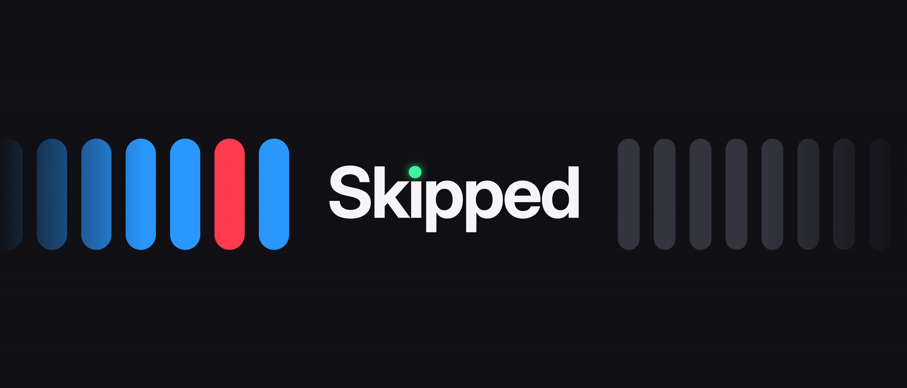
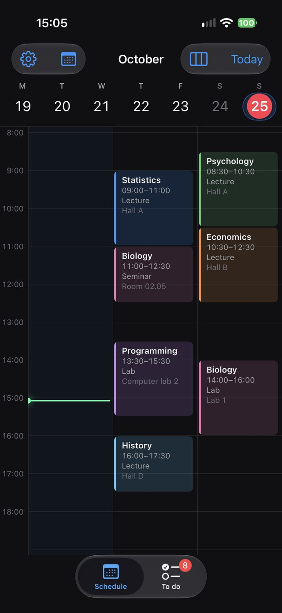
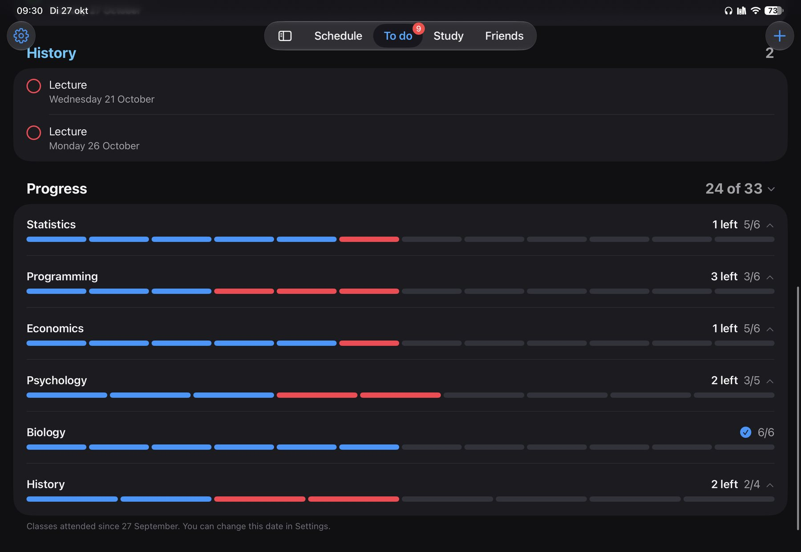
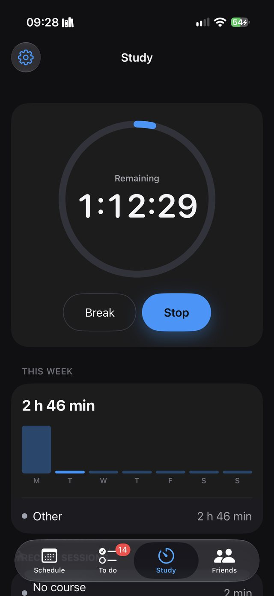
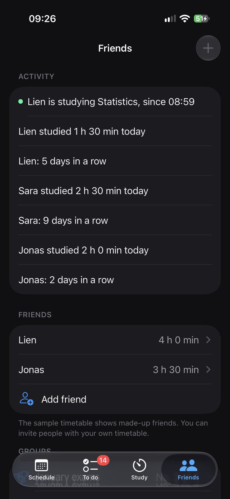
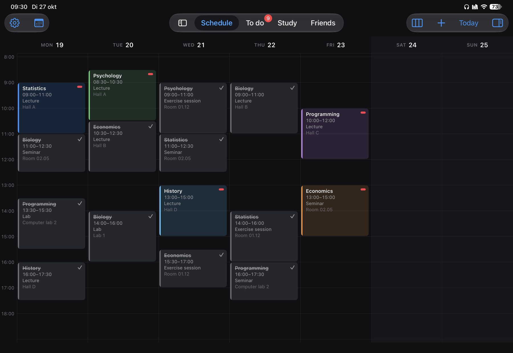

Elke les telt.
Hou bij welke lessen je gevolgd en gemist hebt. Blijf bij, vak per vak, tot aan het examen.
Gratis voor iPhone, iPad en Mac.
Skipped in 18 seconden. Met geluid.
Rooster
Je lessen, gewoon uit Agenda.
Skipped leest je uurrooster uit Apple Agenda. Een gevolgde les kleurt blauw, een gemiste krijgt een rood pilletje, en de lijn toont waar je dag nu staat. Wil je, dan zie je ook de lessen van een vriend in je rooster.

Inhaalplan
Gemist? Je inhaalplan staat klaar.
Elke les die je mist, komt in Te doen, netjes per vak. Vink ze af zodra je ze ingehaald hebt, en zie per vak hoeveel je nog moet.

Studeermodus
Focus, met de klok mee.
Start een blok voor een vak en Skipped houdt bij hoeveel je deze week studeerde. Wil je, dan blijven afleidende apps dicht tot je blok klaar is.

Vrienden en groepen
Samen hou je het vol.
Zie wie er nu aan het studeren is en hoeveel uur je vrienden maakten. Start een groep voor de examens en kijk wie het meest studeert. Jij kiest per vriend en per groep wat je deelt.

En nog meer
Alles wat je nodig hebt.
iPhone, iPad, Mac en web
Overal hetzelfde rooster.
Via iCloud gaan je vakken, notities en studiesessies mee naar je andere toestellen. Je hoeft geen account te maken. En op een andere computer open je je rooster op het web.
Skipped op het web openen
Skipped
Elke les telt. Gratis voor iPhone, iPad en Mac.